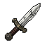
ダガー 剣 Dagger
深さ 1／重さ 0.5 ポンド／値 10／命中 +0・ダメージ 1d5
投げられる特別が付きやすい
156 個。種別ごとに、浅い順で並べてある。 Sil-Q には町も店も金貨も無いので、「値」で買い物はできない。 鍛冶で打つときの手間と、そのアイテムがどれくらい上等かの目安として読む。 覚え書きは手ほどきの階の床に置いてある案内で、書いてある文が違うだけである。

深さ 1／重さ 0.5 ポンド／値 10／命中 +0・ダメージ 1d5
投げられる特別が付きやすい
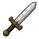
深さ 1／重さ 2.0 ポンド／値 90／命中 +0・ダメージ 1d7／回避 +1
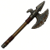
深さ 1／重さ 3.0 ポンド／値 36／命中 +0・ダメージ 1d9
投げられる手半長柄
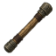
深さ 1／重さ 5.0 ポンド／値 200／命中 +0・ダメージ 2d5／回避 +2
両手付呪できる特別が付きやすい
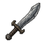
深さ 2／重さ 4.0 ポンド／値 10／命中 -1・ダメージ 2d5／回避 +1
粗末な刃だが、無いよりはましだ。オーク風に反りが付いている。
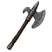
深さ 2／重さ 1.0 ポンド／値 150／命中 -1・ダメージ 4d2
斧
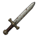
深さ 4／重さ 3.0 ポンド／値 300／命中 +0・ダメージ 2d5／回避 +1
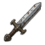
深さ 4／重さ 6.0 ポンド／値 775／命中 -2・ダメージ 3d5／回避 +1
両手
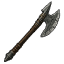
深さ 4／重さ 6.0 ポンド／値 36／命中 +1・ダメージ 1d13／回避 +1
両手長柄
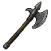
深さ 4／重さ 4.5 ポンド／値 304／命中 -3・ダメージ 3d4
手半斧
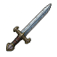
深さ 5／重さ 2.0 ポンド／値 5,000／命中 +1・ダメージ 2d5／回避 +1
傷まないミスリル
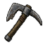
深さ 5／重さ 5.0 ポンド／値 10／命中 -3・ダメージ 2d2
武器として装備でき、瓦礫を掘り抜くことができる。
掘削両手
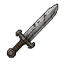
深さ 6／重さ 4.0 ポンド／値 350／命中 -2・ダメージ 3d3／回避 +1
手半
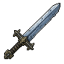
深さ 6／重さ 4.0 ポンド／値 7,000／命中 -2・ダメージ 3d6／回避 +1
傷まない両手ミスリル
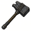
深さ 6／重さ 5.0 ポンド／値 225／命中 -2・ダメージ 4d1
手半
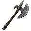
深さ 8／重さ 7.0 ポンド／値 363／命中 -1・ダメージ 2d9／回避 +1
両手長柄
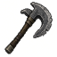
深さ 8／重さ 8.0 ポンド／値 334／命中 -4・ダメージ 4d4
両手斧
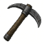
深さ 10／重さ 10.0 ポンド／値 700／命中 -5・ダメージ 5d2
武器として装備でき、（たいていは）瓦礫や石英を掘り抜くことができる。
掘削両手
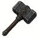
深さ 20／重さ 100.0 ポンド／値 1,000／命中 -7・ダメージ 6d5
必ずアーティファクト両手
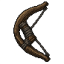
深さ 1／重さ 1.5 ポンド／値 50／命中 +0・ダメージ 1d7
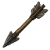
深さ 1／重さ 0.1 ポンド／値 1
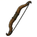
深さ 6／重さ 3.0 ポンド／値 120／命中 +0・ダメージ 2d4
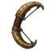
深さ 15／重さ 4.5 ポンド／値 500／命中 +0・ダメージ 4d2
鍛冶で作れない
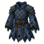
深さ 1／重さ 3.0 ポンド／値 4／回避 +1・防護 1d0
付呪できる
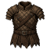
深さ 1／重さ 7.0 ポンド／値 18／回避 -1・防護 1d4
深さ 1／重さ 2.0 ポンド／値 7／回避 +0・防護 1d1
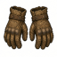
深さ 1／重さ 0.5 ポンド／値 3／回避 +0・防護 1d0
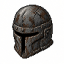
深さ 1／重さ 5.0 ポンド／値 15／回避 -1・防護 1d1
傷んでいる鍛冶で作れない
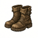
深さ 1／重さ 2.0 ポンド／値 7／回避 -1・防護 1d1
傷んでいる鍛冶で作れない
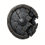
深さ 1／重さ 5.0 ポンド／値 50／回避 +0・防護 1d2
傷んでいる鍛冶で作れない
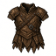
深さ 2／重さ 13.0 ポンド／値 200／回避 -2・防護 1d6
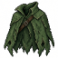
深さ 2／重さ 2.0 ポンド／値 3／回避 +1・防護 1d0
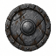
深さ 3／重さ 5.0 ポンド／値 50／回避 +0・防護 1d3
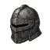
深さ 3／重さ 5.0 ポンド／値 75／回避 -1・防護 1d2
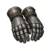
深さ 3／重さ 3.0 ポンド／値 35／回避 +0・防護 1d1
火で傷まない
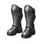
深さ 4／重さ 8.0 ポンド／値 19／回避 -1・防護 1d2
火で傷まない
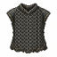
深さ 5／重さ 27.0 ポンド／値 750／回避 -3・防護 2d4
輪を繋ぎ合わせて作られた鎧の胴着。腰まで届く。
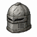
深さ 5／重さ 8.0 ポンド／値 200／回避 -2・防護 1d3
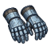
深さ 5／重さ 1.5 ポンド／値 100／回避 +0・防護 1d1
傷まないミスリル
深さ 6／重さ 8.0 ポンド／値 200／回避 +0・防護 1d6
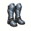
深さ 6／重さ 4.0 ポンド／値 50／回避 +0・防護 1d2
傷まないミスリル
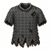
深さ 7／重さ 35.0 ポンド／値 900／回避 -4・防護 2d5
輪を繋ぎ合わせて作られた、長袖の鎧の胴着。腿まで届く。
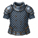
深さ 7／重さ 15.0 ポンド／値 7,000／回避 -2・防護 2d4
輪を繋ぎ合わせて作られた鎧の胴着。
傷まないミスリル
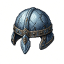
深さ 7／重さ 3.5 ポンド／値 500／回避 -1・防護 1d3
傷まないミスリル
深さ 7／重さ 3.0 ポンド／値 1,000／回避 +0・防護 1d0
必ずアーティファクト
深さ 8／重さ 4.0 ポンド／値 10,000／回避 +0・防護 1d6
傷まないミスリル
深さ 10／重さ 8.0 ポンド／値 300／回避 -2・防護 1d2
顔全体を覆う兜で、恐ろしげな面相に打ち出されている。
火に耐える
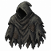
深さ 12／重さ 1.0 ポンド／値 4,000／回避 +3・防護 1d0
闇隠密
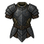
深さ 17／重さ 7.0 ポンド／値 200／回避 -1・防護 1d8
ガルヴォルンで作られた鎧。奇妙に輝く黒い金属で、薄くしなやかになるほど延ばしやすく、それでいて刃も矢も止めるほど強い。
傷まない鍛冶で作れない
深さ 20／重さ 400.0 ポンド／値 1,000
必ずアーティファクト
深さ 20／重さ 13.0 ポンド／値 1,000／回避 -3・防護 1d6
必ずアーティファクト
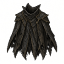
深さ 23／重さ 5.0 ポンド／値 1,000／回避 +2
必ずアーティファクト
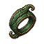
深さ 1／重さ 0.1 ポンド／値 65,000
必ずアーティファクト
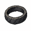
深さ 1／重さ 0.1 ポンド／値 65,000
必ずアーティファクト
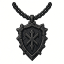
深さ 1／重さ 0.1 ポンド／値 65,000
必ずアーティファクト
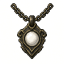
深さ 1／重さ 0.1 ポンド／値 100,000
必ずアーティファクト
深さ 1／重さ 0.1 ポンド／値 50,000
必ずアーティファクト
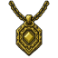
深さ 1／重さ 0.1 ポンド／値 75,000
必ずアーティファクト
深さ 1／重さ 0.1 ポンド／値 1,000
必ずアーティファクト
深さ 1／重さ 0.1 ポンド／値 1,000
必ずアーティファクト
深さ 1／重さ 0.1 ポンド／値 1,000
必ずアーティファクト
深さ 4／重さ 0.1 ポンド
知覚幻覚に耐える
深さ 6／重さ 0.1 ポンド／値 300
朦朧に耐える腕力を保つ早く飢える見ればわかる
深さ 6／重さ 0.1 ポンド／値 1,000
毒に耐える見ればわかる
深さ 7／重さ 0.1 ポンド／値 20
死を欺く見ればわかる
深さ 7／重さ 0.1 ポンド／値 500
打撃から身を守ってくれる。
深さ 7／重さ 0.1 ポンド
恐怖を招く見ればわかる軽い呪い
深さ 8／重さ 0.1 ポンド／値 500
耐久耐久を保つ
深さ 8／重さ 0.1 ポンド／値 150
意志恐怖に耐える混乱に耐える
深さ 8／重さ 0.1 ポンド／値 500
敵の攻撃を避けやすくなる。
深さ 8／重さ 0.1 ポンド／値 1,000
隠密射撃見ればわかる
深さ 9／重さ 0.1 ポンド
祟られている透明が見える見ればわかる
深さ 9／重さ 0.1 ポンド／値 500
腕力腕力を保つ
深さ 9／重さ 0.1 ポンド／値 250
火に耐える見ればわかる
深さ 10／重さ 0.1 ポンド／値 500
恩寵恩寵を保つ
深さ 10／重さ 0.1 ポンド／値 500
敏捷敏捷を保つ
深さ 10／重さ 0.1 ポンド／値 250
冷気に耐える見ればわかる
深さ 12／重さ 0.1 ポンド／値 600
回復見ればわかる
深さ 12／重さ 0.1 ポンド／値 500
敵に当てやすくなる。
深さ 12／重さ 0.1 ポンド／値 1,500
麻痺しない見ればわかる
深さ 14／重さ 0.1 ポンド／値 20,000
耐久を保つ恩寵を保つ消化が遅い傷まない見ればわかる
深さ 15／重さ 0.1 ポンド／値 500
知覚
深さ 16／重さ 0.1 ポンド／値 30,000
恩寵恩寵を保つ光
深さ 1／重さ 2.0 ポンド／値 2
半径1マスの光源として装備できる。別の木の松明に継ぎ足す燃料としても使える（光は最大3,000ターンまで）。
鍛冶で作れない見ればわかる
深さ 1／重さ 1.0 ポンド／値 2
マルローンの木は明るく、しかし短く燃える。半径3マスの光源として装備できる。別の木の松明に継ぎ足す燃料としても使える（光は最大100ターンまで）。
鍛冶で作れない見ればわかる
深さ 2／重さ 5.0 ポンド／値 250
半径7マスの範囲を照らす。部屋の中にいるなら、その部屋全体も照らす。効果の及ぶ範囲にいる光に弱い生き物をよろけさせる。
深さ 3／重さ 0.1 ポンド／値 1,000
シルマリルに似た、魔力を帯びて輝く宝玉。ただしその力ははるかに弱い。半径1マスの光源として装備できる。永遠に輝き続ける。
深さ 5／重さ 3.0 ポンド／値 35
半径2マスの光源として装備できる。別のランタンに継ぎ足す燃料としても使える（光は最大7,000ターンまで）。
深さ 6／重さ 5.0 ポンド／値 400
視界内のすべての扉を閉じ、鍵を掛けることがある。
深さ 6／重さ 5.0 ポンド／値 400
持ち物に掛かった呪いを解く。
深さ 7／重さ 5.0 ポンド／値 400
自分の能力をすべて知ることができる。
深さ 7／重さ 5.0 ポンド
この階の階段に敵を呼び寄せる。
深さ 7／重さ 1.0 ポンド／値 100
その音は敵に恐慌をもたらす。
見ればわかる
深さ 7／重さ 1.0 ポンド
敵に向かって挑みの音を鳴り響かせる。
見ればわかる
深さ 9／重さ 5.0 ポンド／値 400
視界内の扉と罠を暴き出し、開けたり壊したりすることがある。
深さ 9／重さ 5.0 ポンド／値 400
視界内のすべての敵を恐れさせる。
深さ 9／重さ 5.0 ポンド
半径7マスの範囲を暗くする。部屋の中にいるなら、その部屋全体も暗くする。
深さ 10／重さ 5.0 ポンド／値 400
アイテムを一つ鑑定する。（充填を消費せずに取り消すことができる。）
深さ 10／重さ 1.0 ポンド／値 100
その音は敵をよろけさせる。
見ればわかる
深さ 11／重さ 5.0 ポンド／値 400
視界内のすべての敵に強い疲れをもたらす。
深さ 11／重さ 5.0 ポンド／値 400
守りのルーンを描くのに使える。敵はこれを越えるのに苦労する。
深さ 11／重さ 5.0 ポンド／値 400
別の杖をいくらか再充填できる。
深さ 12／重さ 1.0 ポンド／値 1,000
小さな宝玉の光で輝く、魔力を帯びた燈。半径4マスの光源として装備できる。永遠に輝き続ける。
ミスリル
深さ 12／重さ 1.0 ポンド／値 100
その音は敵を吹き飛ばす。
見ればわかる
深さ 13／重さ 5.0 ポンド／値 400
まわりの様子を明らかにする。
深さ 13／重さ 5.0 ポンド／値 400
この階のすべてのアイテムのありかを示す。
深さ 13／重さ 5.0 ポンド／値 400
この階のすべての敵のありかを示す。
深さ 13／重さ 5.0 ポンド／値 400
視界内のすべての敵を混乱させる。
深さ 13／重さ 1.0 ポンド／値 100
その音は岩をも砕く。東西南北のほか、勇気ある者は上（<）や下（>）へ向けることもできる。
見ればわかる
深さ 25／重さ 0.1 ポンド／値 100,000
半径7マスの光源として装備できる。永遠に輝き続ける。
透明が見える恩寵を保つ見ればわかる傷まない鍛冶で作れない
深さ 2／重さ 0.5 ポンド／値 100
今受けている毒を治す。
見ればわかる
深さ 2／重さ 0.5 ポンド
10d4ターンの間、動きが遅くなる（加速-1）。
見ればわかる
深さ 3／重さ 0.5 ポンド／値 100
恐怖をすべて追い払い、生命力を四分の一だけ回復し、（2d4ターンの間）よろけさせる。
見ればわかる
深さ 3／重さ 0.5 ポンド
5d4点の毒を受ける。
見ればわかる
深さ 3／重さ 0.1 ポンド／値 25
10d4ターンの間、暗い憤怒に駆られる（腕力・耐久+1、敏捷・恩寵-1、特別な近接攻撃、恐怖への耐性）。薬草は通常なら約250ターンぶんの滋養になる。
見ればわかる
深さ 3／重さ 0.1 ポンド／値 10
10d4ターンの間続く恐怖と、5d4ターンの間続く俊足をもたらす。薬草は通常なら約250ターンぶんの滋養になる。
見ればわかる
深さ 4／重さ 0.5 ポンド／値 200
20d4ターンの間、知覚に+10の補正を与え、声を四分の一回復する。
見ればわかる
深さ 4／重さ 0.5 ポンド
10d4ターンの間、盲目になる。
見ればわかる
深さ 4／重さ 0.1 ポンド
空腹が進む（通常なら1,000ターンぶん）。
見ればわかる
深さ 5／重さ 0.5 ポンド／値 100
視力を取り戻し、10d4ターンの間、盲目と幻覚に耐性を得て、見えない生き物が見えるようになる。
見ればわかる
深さ 5／重さ 0.5 ポンド／値 200
10d4ターンの間、動きが速くなる（加速+1）。
見ればわかる
深さ 5／重さ 0.1 ポンド／値 50
通常なら約2000ターンぶんの滋養になる。
見ればわかる
深さ 5／重さ 0.1 ポンド／値 1,000
能力値をそれぞれ最大3点まで復元する。薬草は通常なら約250ターンぶんの滋養になる。
見ればわかる
深さ 6／重さ 0.5 ポンド／値 100
よろけ、混乱、幻覚を治し、憤怒を鎮める。
見ればわかる
深さ 6／重さ 0.5 ポンド／値 200
20d4ターンの間、腕力に+3の補正を与える。その際、失われた腕力も復元する。
見ればわかる
深さ 6／重さ 0.5 ポンド
5d4ターンの間、混乱する。
見ればわかる
深さ 7／重さ 0.5 ポンド／値 200
20d4ターンの間、敏捷に+3の補正を与える。その際、失われた敏捷も復元する。
見ればわかる
深さ 7／重さ 0.1 ポンド／値 75
すべての切り傷を治し、生命力を半分回復する。薬草は通常なら約250ターンぶんの滋養になる。
見ればわかる
深さ 7／重さ 0.5 ポンド／値 2
通常なら約1,500ターンぶんの滋養になる。
見ればわかる
深さ 7／重さ 0.1 ポンド／値 10
恩寵が減っていれば1点復元する。通常なら約3,000ターンぶんの滋養になる。
見ればわかる
深さ 7／重さ 1.0 ポンド／値 3
真鍮のランタンに3,000ターンぶんの光を継ぎ足せる（最大7,000ターンまで）。
見ればわかる
深さ 8／重さ 0.5 ポンド／値 200
20d4ターンの間、耐久に+3の補正を与える。その際、失われた耐久も復元する。
見ればわかる
深さ 8／重さ 0.1 ポンド
80d4ターンの間、幻覚を見る。ただしその際、盲目は治る。薬草は通常なら約250ターンぶんの滋養になる。
見ればわかる
深さ 8／重さ 0.1 ポンド
10d4ターンの間続く幻惑に陥る。薬草は通常なら約250ターンぶんの滋養になる。
見ればわかる
深さ 8／重さ 0.1 ポンド
腕力が1点下がる。薬草は通常なら約250ターンぶんの滋養になる。
見ればわかる
深さ 8／重さ 0.1 ポンド
耐久が1点下がる。薬草は通常なら約250ターンぶんの滋養になる。
見ればわかる
深さ 9／重さ 0.5 ポンド／値 300
すべての切り傷を治し、生命力を半分回復する。
見ればわかる
深さ 9／重さ 0.5 ポンド／値 200
20d4ターンの間、恩寵に+3の補正を与える。その際、失われた恩寵も復元する。
見ればわかる
深さ 9／重さ 0.5 ポンド
敏捷が1点下がる。
見ればわかる
深さ 10／重さ 1.0 ポンド／値 3
通常なら約2,000ターンぶんの滋養になる。
見ればわかる
深さ 11／重さ 0.5 ポンド／値 1,000
よろけ、混乱、幻覚、毒、盲目、切り傷、恐怖を治す。生命力を半分、声をすべて回復する。
見ればわかる
深さ 11／重さ 0.5 ポンド
恩寵が1点下がる。
見ればわかる
深さ 12／重さ 0.5 ポンド／値 100
20d4ターンの間、火と冷気への一時的な耐性を得る。
見ればわかる
深さ 13／重さ 0.5 ポンド／値 300
声を新たにする。
見ればわかる
重さ 0.1 ポンド
シルへようこそ。この物語はアングバンドと呼ばれる広大な迷宮を舞台とする。あなたははるか北を目指して旅し、大きな犠牲を払ってアングバンドへ入り込んだ。地の底1,000 ft まで降り、暗黒の敵モルゴスを見つけ出し、その王冠からシルマリルを切り取って、その光を再び解き放つつもりだ。他の多くのローグライクと同じく、シルの画面は文字で表される。@ があなた、+ は扉、~ は書き付け、四角い塊は壁だ。テンキーか矢印キーで動いて、書き付けまで行ってみよう。（テンキーが効かないときは Numlock を押す必要があるかもしれない。）
見ればわかる
深さ 1／重さ 13.0 ポンド
見ればわかる
深さ 5／重さ 20.0 ポンド／値 20
深さ 8／重さ 12.0 ポンド
見ればわかる
深さ 10／重さ 11.0 ポンド
見ればわかる
深さ 10／重さ 50.0 ポンド／値 60
深さ 12／重さ 25.0 ポンド／値 200
傷まない
深さ 15／重さ 0.1 ポンド／値 100
真銀の、輝く小さな塊。鍛冶場でミスリルのアイテムを作るのに使える。
見ればわかる
深さ 17／重さ 75.0 ポンド／値 250
傷まない
深さ 19／重さ 75.0 ポンド／値 250
傷まない
深さ 24／重さ 75.0 ポンド／値 250
傷まない
深さ 25／重さ 10.0 ポンド／値 250
傷まない見ればわかる